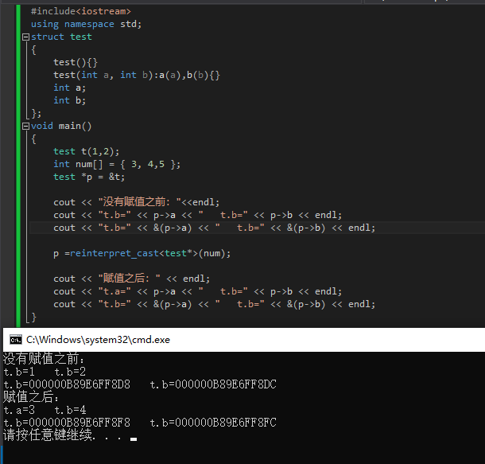

由图中可以看出，先声明了一个结构体t与一个含有三个元素的数组num，接着声明一个指向结构体变量t的一个指针p。
接着使用reinterpret_cast强制转换符将数组首地址赋值给指针p，其实质为虽然声明的是结构体的指针，但是已经指向了数组，
当使用该指针调用结构体对象里的成员时，按照成员变量所占的长度从p当前所指的位置（即数组的起始位置）开始取值。
拓展，无论是什么指针只会指向一个地址，所以不同指针可以强制赋值（无关类型），当使用该指针时，即从所指的地方开始取值。